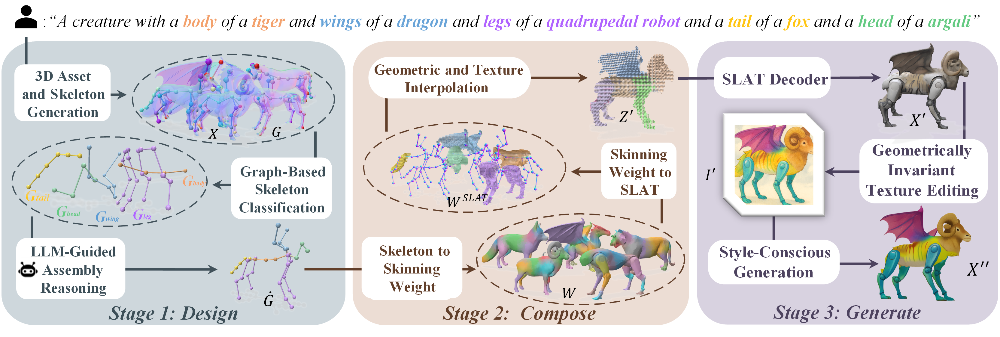

Muses
Designing, Composing, Generating Nonexistent Fantasy 3D Creatures without Training
*Equal contribution
†Corresponding author
TL;DR: A training-free framework for nonexistent fantastic 3D creature generation that leverages a skeletal foundation to explicitly and rationally compose diverse elements into creative creatures.
We present Muses, the first training-free method for fantastic 3D creature generation in a feed-forward paradigm. Previous methods, which rely on part-aware optimization, manual assembly, or 2D image generation, often produce unrealistic or incoherent 3D assets due to the challenges of intricate part-level manipulation and limited out-of-domain generation. In contrast, Muses leverages the 3D skeleton—a fundamental representation of biological forms—to explicitly and rationally compose diverse elements. This skeletal foundation formalizes 3D content creation as a structure-aware pipeline of design, composition, and generation. Muses begins by constructing a creatively composed 3D skeleton with coherent layout and scale through graph-constrained reasoning. This skeleton then guides a voxel-based assembly process within a structured latent space, integrating regions from different objects. Finally, image-guided appearance modeling under skeletal conditions is applied to generate a style-consistent and harmonious texture for the assembled shape. Extensive experiments establish Muses' state-of-the-art performance in terms of visual fidelity and alignment with textual descriptions, and potential on flexible 3D object editing.
Click the cards to view the extracted GLB files. 3D assets are loading slowly, please be patient.
*DreamBeast cannot handle contents with more than three animals, and OmniPart requires manual stitching.
Application | Geometric Editing
Application | Texture Editing

Overview of Muses. Our framework automates fantastic creature generation through a 3D skeleton-driven pipeline of design, composition, and generation. Given a text prompt, Stage I parses it into concepts, generates corresponding 3D assets
{X}
M
m=1
and skeletons
{G=(V,E)}
M
m=1
,
and uses graph classification with LLM-guided reasoning to produce a text-aligned skeleton
Ġ.
In Stage II, this skeleton guides part assembly in a structured latent space (SLAT), yielding a composed latent code Z′. In Stage III, Z′ is decoded into a coarse 3D creature X′, which guides geometry-invariant texture editing and undergoes a final style-conscious refinement to produce the detailed, harmonious output X″. The entire pipeline is automatic, training-free, and feed-forward.
If you find our work useful, please consider citing:
@article{xiang2024structured,
title = {Structured 3D Latents for Scalable and Versatile 3D Generation},
author = {Xiang, Jianfeng and Lv, Zelong and Xu, Sicheng and Deng, Yu and Wang, Ruicheng and
Zhang, Bowen and Chen, Dong and Tong, Xin and Yang, Jiaolong},
journal = {arXiv preprint arXiv:2412.01506},
year = {2024}
}
The website template is borrowed from TRELLIS.